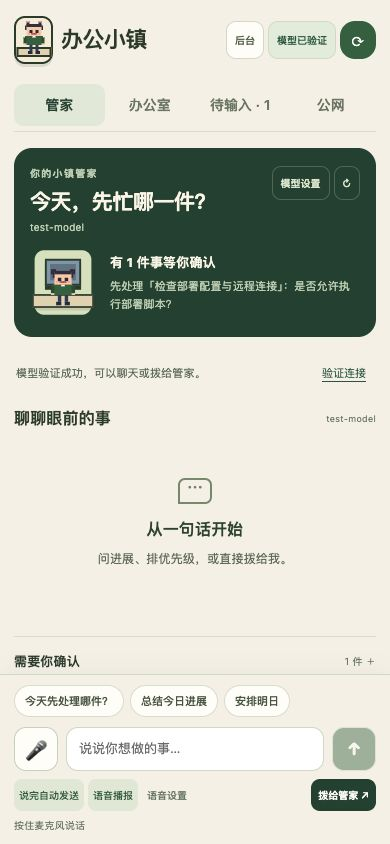
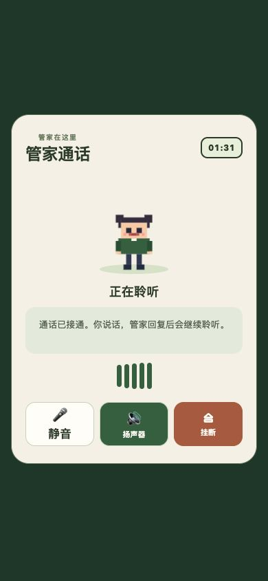

ANDROID · 在手机上照看你的工作
办公室在电脑上，
进展在你手里。
连接自己的 Mac 或 Linux，查看和回复正在运行的 Codex、Claude 会话。需要理清事情时，和管家聊聊，或直接拨给它。
下载安卓 APK ↓首次安装时，按系统提示允许浏览器安装应用。更新已有正式版时，可直接覆盖安装。
小镇的新样子



截图使用样例记录展示界面，连接和通话状态以你手机上的实际结果为准。
先接上你的办公室
- 打开 App，用「发现机器」扫描局域网，或手动添加 SSH 地址、账号与密码／私钥。
- 点击「找任务」，导入机器上的 Codex、Claude 会话。
- 打开员工卡片，查看输出、回复指令，或处理待确认的事项。
手机直接通过 SSH 连接机器，被连接的电脑不需要安装 agentBridge 服务。任务状态由手动刷新获取。
再和管家聊聊
- 在「管家 → 配置模型」填写服务商地址、模型名称和 API Key，保存后点击「验证连接」。
- 先发一句文字，确认模型能回复。发送失败会保留原文，并显示重试入口。
- 在「语音设置」试听声音，再用聊天框旁的麦克风测试识别。
- 两项正常后，点击「拨给管家」，并允许麦克风权限。
本机识别或中文语音引擎不可用时，可在「语音设置 → 云端语音配置」填写百炼北京地域 API Key。语音密钥可以和聊天模型分开配置。没有配置云端语音时，通话需要手机上可用的识别与播报引擎。
0.5.39 更新了什么？
新版采用奶油白与深绿配色，保留像素员工，让聊天成为管家页的主要入口。新增实际模型连接验证、失败消息保留和重试、独立语音密钥配置；修正无文字识别结果卡住、录音切换和挂断后旧结果误发送。还包含 Android 7 兼容、凭据加密和远程回复完成状态修复。
数据保存在哪里？
机器配置、对话和记录保存在手机应用私有存储；密码与 API Key 使用 Android Keystore 加密，不显示在页面状态中。聊天会把必要的任务信息发送到你配置的模型服务；启用百炼云端语音时，录音或播报文字会发送到百炼。应用没有统计上报。
下载和安装说明
下载按钮连接到 GitHub Releases。APK 由仓库 CI 从版本标签构建，并使用固定发布密钥签名。正式版可覆盖同一签名的旧正式版；之前安装的调试版包名不同，会作为另一款应用保留。若浏览器未开始下载，可打开下方「全部版本」中的 agentbridge.apk。